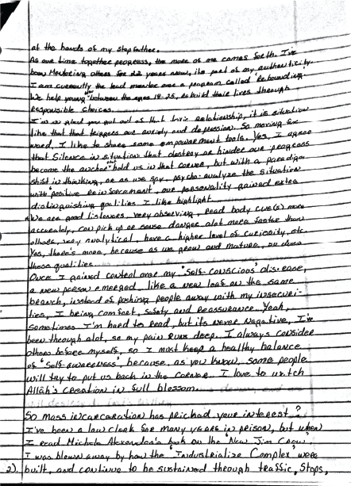
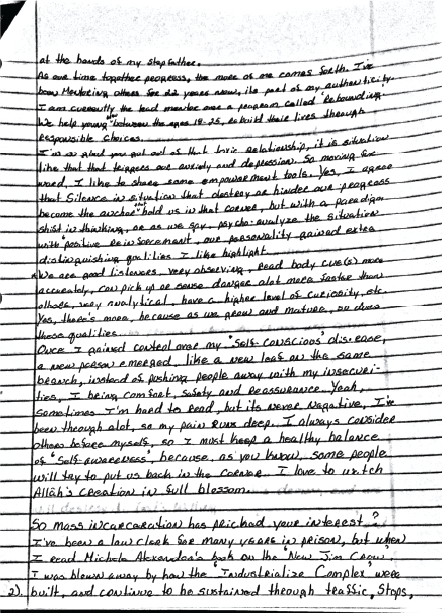
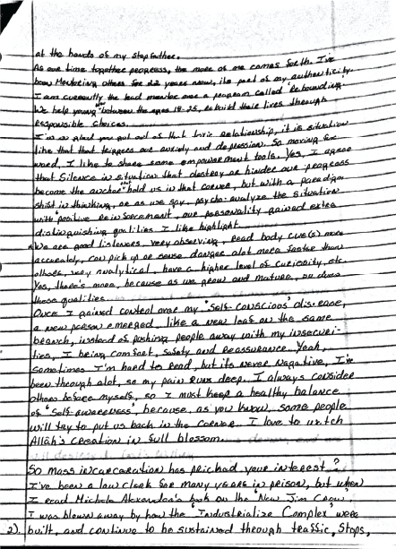

Home
Articles
Infographics
Volunteer Work
Contact
Brittany Burnette
Halle Place
Halle Place is part of a supportive housing program that supports women who were formerly incarcerated which is part of the larger nonprofit, the Lord’s Place. With the help and assist of Val Stanley, Director of Women’s Services at Halle Place I had the privilege to visit with the group of women and exchange writing with a partner based on prompts we developed as a group. Within our group meetings and letter exchange we transgressed the boundaries we place between ourselves as individuals and those individuals we too quickly label and dismiss as less than or different.
Exchange for Change
In 2019 I participated in a letter exchange with Everglades Correctional Facility. With the help of Joshua Schriftman, Kathie Klarreich and Chloë Firetto-Toomey of the non-profitI I was assigned a partner from ECI. My partner at ECI went by the pseudonym “Altruism” and through our letter exchange I gained insight about Altruism’s experiences and backgrounds which were different from my own. Furthermore I was able to develop a complex understanding of current affairs and the need for new solutions, gain a sense of empowerment and realize my potential to create social change, and develop an ethic of service as my motivation shifted from charity, to compassion, and finally to empathy.

 
